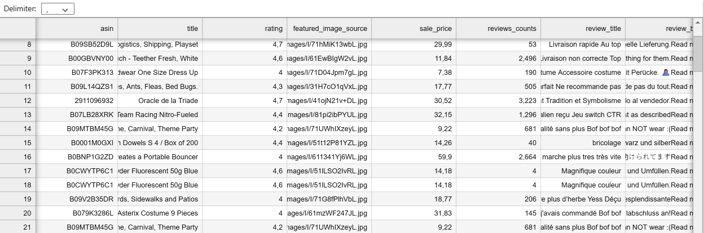
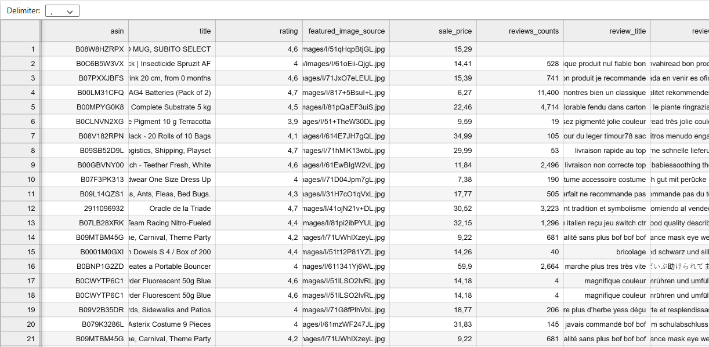
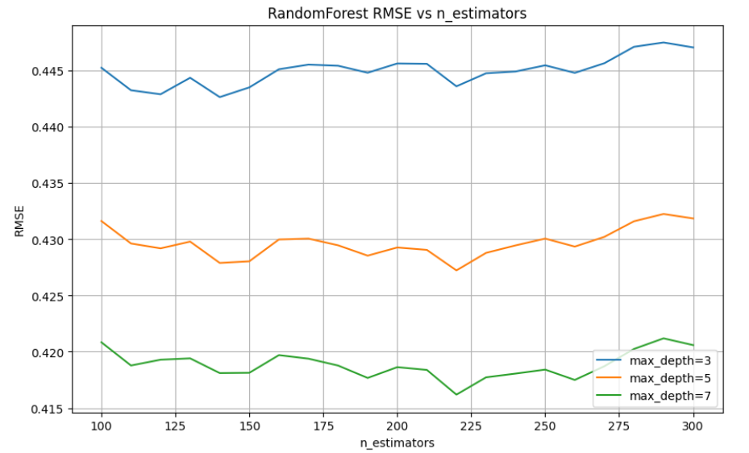
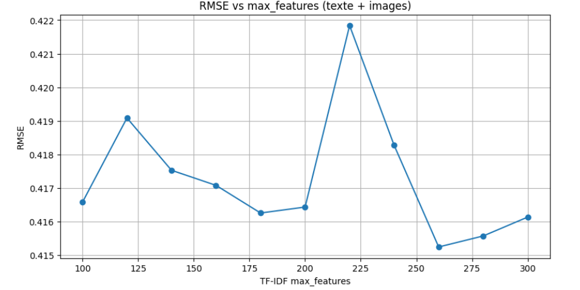
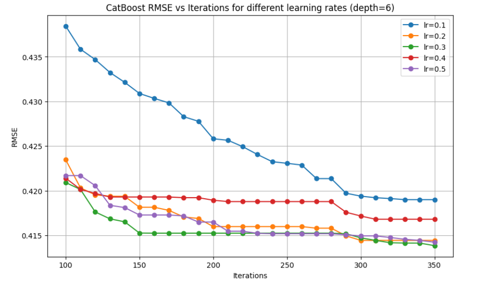
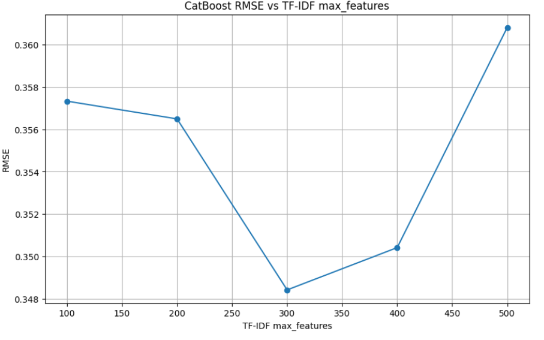

L’étape de collecte des données brutes consiste à extraire et centraliser toutes les informations nécessaires à partir des pages produits du magasin Ponera sur Amazon.
🎯 Objectif
Constituer une base de données fiable, normalisée et exploitable qui servira de fondation à l’entraînement et à l’optimisation du modèle d’intelligence artificielle.
⚙️ Outil utilisé
L’extension IMPORTFROMWEB pour Google Sheets permet d’automatiser la collecte des données produits.
Cette automatisation offre :
Un gain de temps dans la récupération des données,
Une réduction des erreurs humaines liées à la saisie manuelle,
Une mise à jour dynamique des informations collectées.
📦 Données collectées
Les caractéristiques extraites incluent :
ASIN : identifiant unique du produit sur Amazon,
Titre du produit,
Prix,
Note moyenne des clients,
Nombre total de commentaires,
Contenu des avis clients.
✅ Résultat attendu
Une base de données organisée dans Google Sheets, rassemblant toutes les informations nécessaires sous un format uniforme, prête à être utilisée pour les analyses et les applications d’IA.
2️⃣ Nettoyage des textes
Cette étape consiste à préparer et uniformiser la base de données textuelles afin de garantir la qualité des informations qui seront utilisées dans les traitements d’analyse et dans l’entraînement du modèle d’intelligence artificielle.
Un texte brut contient souvent du bruit (ponctuation, majuscules, mots sans importance, etc.), ce qui peut fausser les résultats.
Le nettoyage est donc une étape indispensable pour obtenir une base de données plus cohérente, homogène et exploitable.
🎯 Objectif
Améliorer la qualité des données textuelles en supprimant les éléments inutiles ou redondants, tout en conservant l’information pertinente pour l’analyse.
⚙️ Étapes de nettoyage
Détection automatique de la langue : identifier la langue de chaque commentaire pour appliquer un nettoyage adapté.
Conversion en minuscules : uniformiser le texte afin d’éviter les doublons liés aux majuscules/minuscules.
Suppression de la ponctuation : éliminer les caractères spéciaux ou symboles qui n’apportent pas de valeur sémantique.
Suppression des stopwords : retirer les mots vides (ex. : « le », « de », « et » en français ou « the », « and », « of » en anglais) en fonction de la langue détectée.
✅ Résultat attendu
À l’issue de cette étape, la base de données textuelles est propre, normalisée et directement exploitable.
Ce processus de prétraitement permet d’améliorer significativement les performances des algorithmes de traitement du langage naturel (NLP) et de limiter les biais causés par le bruit présent dans les données brutes.

🔴 Exemple de données brutes avant nettoyage.

🟢 Exemple de données après nettoyage.
3️⃣ Prédiction de la note produit
Cette étape vise à prédire la note attendue d’un produit (sur 5 étoiles) à partir de plusieurs sources d’information.
La combinaison de données textuelles, numériques, catégorielles et visuelles permet d’obtenir une évaluation fiable de la qualité perçue du produit,
ainsi qu’une estimation du risque de retour.
🎯 Objectif
Déterminer automatiquement la note probable d’un produit et identifier les articles susceptibles d’obtenir une mauvaise évaluation (≤ 2 étoiles).
📦 Features utilisées
Titre du produit (texte) → vectorisé avec TF-IDF pour extraire les mots-clés pertinents.
Prix de vente (numérique) → normalisé et complété en cas de valeurs manquantes.
ASIN (catégoriel) → encodé en vecteurs binaires (One-Hot Encoding).
Image principale (visuel) → convertie en vecteur de caractéristiques via un réseau de neurones pré-entraîné (ResNet18 tronqué).
⚙️ Méthodologie
Chaque type de donnée est traité avec une méthode adaptée :
TF-IDF → pondère les mots selon leur importance relative dans le corpus.
Normalisation → met les valeurs numériques (prix) sur une échelle comparable.
One-Hot Encoding → transforme les identifiants produits en variables exploitables.
Extraction d’images → capture les caractéristiques visuelles (couleurs, textures, formes) dans un vecteur de 512 dimensions.
🔗 Combinaison
Les représentations issues des différentes sources sont fusionnées en un vecteur unique,
utilisé comme entrée pour le modèle prédictif.
Cette approche multi-modale améliore la précision en exploitant simultanément :
le texte (description du produit),
les données chiffrées (prix),
les identifiants (ASIN),
les signaux visuels (image).
✅ Résultat attendu
Le système génère :
Une note prédite (rating_pred, entre 1 et 5).
Une estimation du risque de retour.
4️⃣ Optimisation des hyperparamètres du modèle
Cette étape consiste à optimiser les performances d’un modèle d’ensemble de type RandomForest appliqué à la prédiction de la note produit.
RandomForest est une méthode basée sur la combinaison de plusieurs arbres de décision, ce qui permet de réduire la variance et d’améliorer la robustesse de la prédiction.
🎯 Méthodologie
Les données préparées précédemment (texte TF-IDF, prix normalisé, identifiants produits encodés et vecteurs d’images) sont concaténées en un vecteur unique pour servir d’entrée au modèle.
Ensuite, nous effectuons une recherche d’hyperparamètres pour identifier la configuration qui minimise l’erreur de prédiction.
n_estimators : nombre d’arbres dans la forêt.
max_depth : profondeur maximale de chaque arbre.
max_features (TF-IDF) : nombre maximal de mots-clés pris en compte dans la vectorisation du texte.
Pour chaque combinaison de paramètres, nous calculons la Root Mean Squared Error (RMSE) sur le jeu de test afin de déterminer les réglages optimaux.
📊 Résultats
Meilleure RMSE : 0.4161 avec n_estimators=220 et max_depth=7
Meilleur nombre de features TF-IDF : 260, donnant une RMSE=0.415

Variation de la performance selon le nombre d’estimateurs et la profondeur.

Optimisation conjointe de TF-IDF max_features et des paramètres RandomForest.
✅ Conclusion
L’utilisation de RandomForest sur les données multi-modales concaténées (texte, numérique, catégoriel et visuel) a permis d’obtenir des prédictions fiables des notes produits.
La recherche d’hyperparamètres a montré que n_estimators=220, max_depth=7 et max_features=260 pour la TF-IDF offrent un bon compromis entre précision et complexité.
Cette configuration garantit que le modèle exploite efficacement toutes les caractéristiques extraites tout en restant stable et généralisable sur de nouvelles données.
5️⃣ Hyperparameter-tuning CatBoost
CatBoost est utilisé pour traiter efficacement les données hétérogènes :
Support natif des données catégorielles (ex. ASIN).
Gestion automatique des valeurs manquantes.
Robuste aux déséquilibres de classes.

Exemple d’entraînement CatBoost avec early stopping.

Comparaison des performances : CatBoost vs RandomForest.